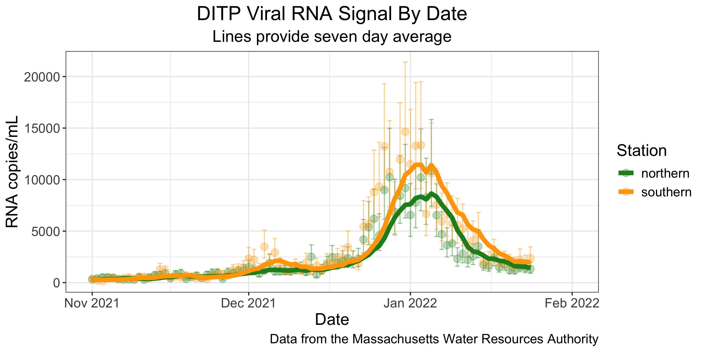

Data and AI Literacy
Kelly McConville
Dominguez Center for Data Science Fall 2025
Bombardment of Data Arguments


Bombardment of Data Arguments

Example: Visualizing COVID Prevalence
In May of 2020, the Georgia Department of Public Health posted the following graph:

At a quick first glance, what story does the Georgia Department of Public Health graph appear to be telling?
What is misleading about the Georgia Department of Public Health graph? How could we fix this issue?
Example: Visualizing COVID Prevalence
Alberto Cairo, a journalist and designer, created the second graph of the Georgia COVID-19 data:

A key principle of data visualization is to “help the viewer make meaningful comparisons”.
What comparisons are made easy by the lefthand graph? What about by the righthand graph?
From these graphs, can we get an accurate estimate of the COVID prevalence in these Georgian counties over this two week period?
Data Analysis Process
Need to understand how “raw” data are processed into insights.
What choices were made at each step?
How do those choices impact the conclusions?
Opportunities Outside the Classroom

First Workshop of the Academic Year:
Designing Data Visualizations
Tuesday, September 9, 2025 4:30-6:00pm, Taylor 210
Want to make your data visualizations stand out? No matter what tool you use, your chart, color, and text choices will have a huge impact on how people interpret your results. This workshop will cover design best practices useful for any platform, so no experience with data visualization tools is required.
üçï and üç™ provided!

Opportunities Outside the Classroom


Stay Informed and Pathways
To stay up-to-date on data science and AI events, sign up for the Dominguez Center for Data Science list-serv:

To receive credit for attending today’s session on Data and AI Literacy: